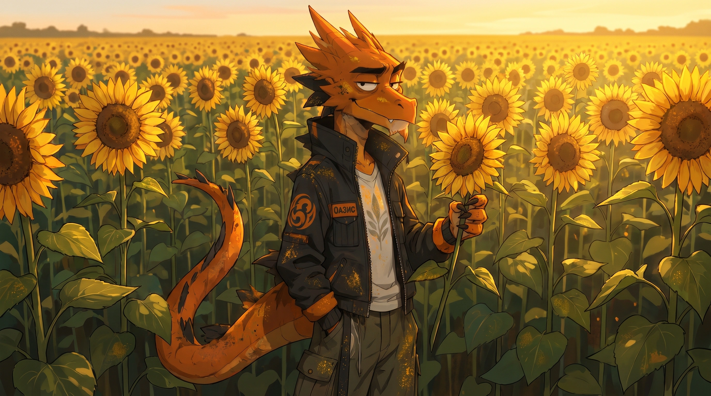
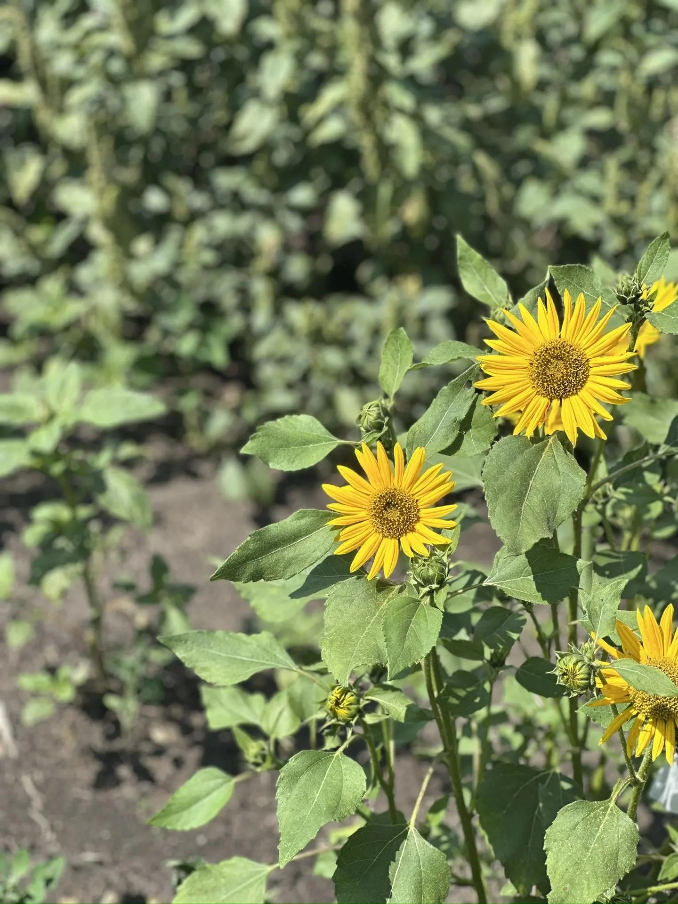
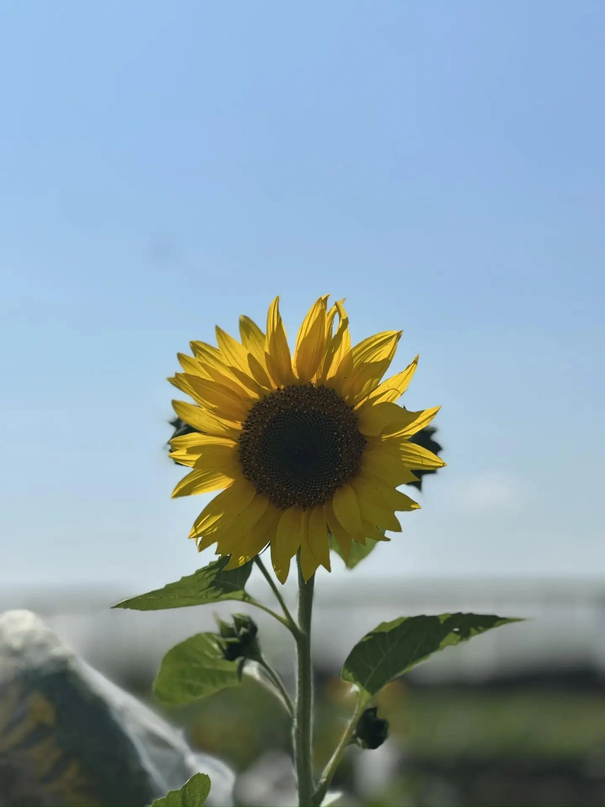

СЕЛЕКЦИОННАЯ ПРОГРАММА
«ПОДСОЛНЕЧНИК»
Описание программы «Подсолнечник»
Подсолнечник является главной масличной культурой на территории СНГ: его доля в общем объёме производства растительных масел составляет 75–80 %. Среди масличных культур мира по площади посевов он занимает второе место, уступая лишь сое. За последние три десятилетия мировые посевные площади подсолнечника увеличились в два раза и сейчас достигают 30 млн га. Основные посевы подсолнечника сосредоточены в Европе, Америке и Азии. Максимальные площади заняты подсолнечником в РФ, на Украине, в странах ЕС, Аргентине и США.

Направления селекции
- Устойчивость к заразихе
- Засухоустойчивость
- Короткостебельность
- Устойчивость к болезням: ЛМР, фомозу, фомопсису, серой гнили, сухой гнили и бактериальной гнили
- Устойчивость к гербицидам
- Высокое содержание олеинового масла
